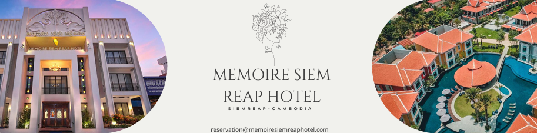

Angkor Archaeological Park, Siem Reap Province, Cambodia
Angkor Wat is the most famous and best‑preserved temple in the Angkor Archaeological Park. Built by King Suryavarman II in the early 12th century as his state temple and capital city, it is the largest religious monument in the world, covering 162 hectares. Originally dedicated to the Hindu god Vishnu, it gradually transformed into a Buddhist temple.
The temple is a masterpiece of Khmer architecture, renowned for its breathtaking central towers, extensive bas‑reliefs, and the iconic lotus‑shaped spires. The outer walls feature over 1,200 square meters of intricately carved scenes from Hindu epics including the Churning of the Ocean of Milk and the Battle of Kurukshetra.
Angkor Wat is oriented to the west, unusual for Khmer temples, leading scholars to believe it may have also served as a funerary temple for the king. Today, it is the national symbol of Cambodia, appearing on the country's flag. Sunrise at Angkor Wat is a world‑famous experience, drawing visitors from around the globe to witness the silhouette of the towers reflected in the lotus ponds.
💡 Pro tip: Arrive at 4:30 AM for the best sunrise spot (left side of the lotus pond). Visit early morning or late afternoon to avoid the heat and crowds. An Angkor Pass is required (1‑day: $37, 3‑day: $62). Allow at least 2–3 hours to explore the main temple. Wear comfortable shoes and bring water.
